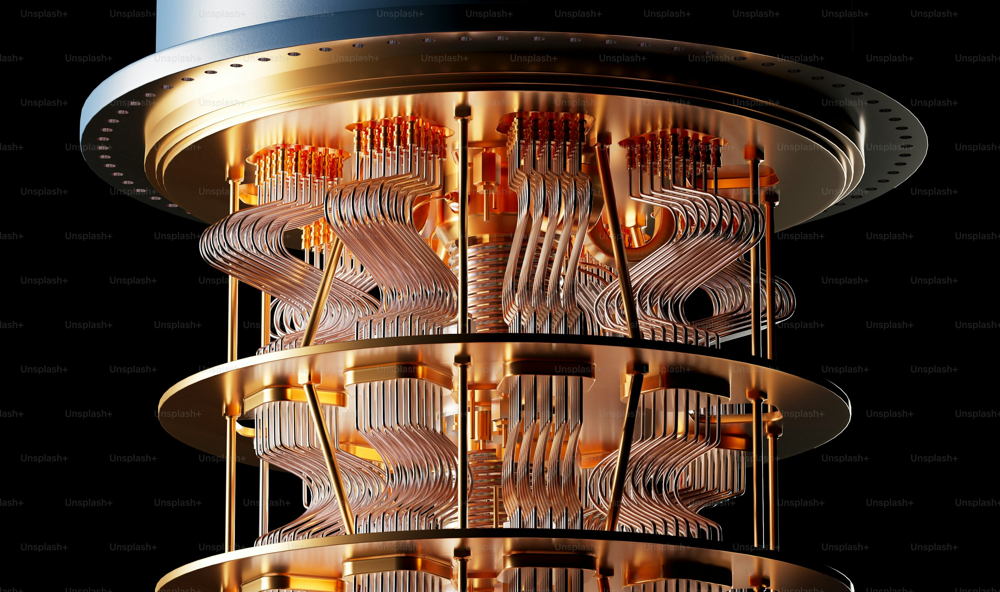

Chatri Khatfan has extensive leadership and technical management experience, successfully leading companies in Thailand and Japan. He managed Thai Audiotex Limited and TAS Mobile Limited for three years, progressing to top management. After a project manager role at Locus Telecommunications Inc., he returned to Thai Audiotex Limited as Head of Technical Operations for both companies for nine years.
Co-founder and technical director of Utel Corporation (Japan) since 2010, Chatri has been instrumental in steering technical vision and development.
He holds a Bachelor of Engineering in Electrical and Computer Engineering from Queensland University of Technology (QUT) and postgraduate credentials in Computer System Engineering from the University of Queensland (UQ), both highly regarded internationally. His scholarship-backed education strengthened his technical and global outlook. Fluent in English, Chatri excels in international communication.
Technical expertise includes embedded systems, network architecture, software development, system integration, and hardware troubleshooting, with proficiency in C/C++, Python, Java, IoT, cloud, and AI technologies.
Current AI & Quantum Computing Projects
- Machine learning models for predictive analytics to improve business decisions. Google Cloud AI Platform
- Computer vision for real-time object detection and quality control. OpenCV
- NLP applications enhancing customer service and chatbots. OpenAI GPT-4
- AI automation for network management and cybersecurity. IBM Watson Cybersecurity
- Development of quantum algorithms to optimize complex system modeling. IBM Quantum Experience
- Research on hybrid quantum-classical machine learning models for enhanced computational efficiency. Microsoft Quantum Development Kit
Chatri’s combination of technical skill, leadership, and communication make him well-suited for roles demanding strategic insight and innovation.
Related Projects & Themes

Quantum Computing